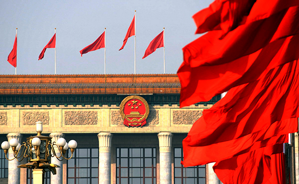

展望2106 • 中国经济
返回
2016年中国经济八大关键词
转自人民网、新华网

2015年12月21日闭幕的中央经济工作会议聚焦供给侧结构性改革，明确诸多新论断、新政策、新举措，传递出一系列含金量十足的政策走向。
我们用8个关键词，看专家如何解读。
供给侧
【会议提出】
明年及今后一个时期，要在适度扩大总需求的同时，着力加强供给侧结构性改革，实施相互配合的五大政策支柱。
【专家解读】
所谓“供给侧改革”，就是从供给、生产端入手，通过解放生产力，提升竞争力促进经济发展，其核心在于提高全要素生产率。过去常说的三驾马车——投资、消费、出口，都是从需求方面推动经济发展，但这几年供给端出了问题，表现在一方面产能过剩，另一方面，老百姓需求的高品质、高附加值的产品却难以满足，致使大量国内消费需求转向海外。
供给方面出现的问题其实是结构性问题，所以中央提出供给侧改革，其核心是结构调整。12月中旬中央政治局会议明确，2016年的供给侧改革要从“深入实施创新驱动战略”、“积极稳妥推进企业优胜劣汰”、“帮助企业降低成本”、“化解房地产库存”、“保持有效投资力度”等多个维度同时发力。
供给侧改革的同时，需求方面也不能偏废，要“两头促进”，不能“一头沉”。需求侧改革也存在结构性问题。在投资和消费的结构中，过去多依赖投资，现在应增加消费的比重，以消费拉动经济；在消费中，过去政府消费占比大，居民消费少，今后应提高居民消费。
——首都经济贸易大学教授谢太峰
创新创业
【会议提出】
坚持深入实施创新驱动发展战略，推进大众创业、万众创新，依靠改革创新加快新动能成长和传统动能改造提升。
【专家解读】
创新是全方位的，包括制度、理论、技术、模式等创新。技术创新可以提高效率，推动产业转型升级，如，“中国制造2025”、“互联网+”等。体制机制创新涉及改革，按照计划，新一轮改革到2020年基本完成。改革任务繁重，国企、财税、金融体制、土地制度、户籍等改革都将有大的推进。
要推动全社会力量进行创新、创业。社会创新的主体是企业，包括国有和民营企业，要激发它们的创新动力，特别是国有企业要起模范带头作用；个人是创业的主体，要改革科研、教育体制，解决当前应试教育和科研体制的弊端和问题，培养创新型人才。
企业、政府、科研机构三者应协同努力，共同打造公共创新平台，在社会上形成整体创新合力，给那些有创新能力但资金缺乏的个人提供更多的帮助。
科技成果转化应用需要多层次资本市场的支持，所以要通过金融创新支持科研成果转化。如，大力发展风险投资、私募股权基金等新型金融业务支持创新创业。还应鼓励跨国创新合作，特别是重大技术研发要积极开展国际合作。
——中国国际经济交流中心经济研究部部长徐洪才
双向开放
【会议提出】
要更加注重推进高水平双向开放。继续抓好优化对外开放区域布局、推进外贸优进优出、积极利用外资、加强国际产能和装备制造合作、加快自贸区及投资协定谈判、积极参与全球经济治理等工作。
【专家解读】
作为“十三五”的开局之年，此次会议透露出2016年对外开放领域至少有以下几点是要突出考虑的：
首先，进一步拓展我们的国际空间，把“一带一路”、亚投行、自贸区等战略规划落实到位；第二，继续转变我们的对外贸易发展方式，从“大进大出”到“优进优出”，从供给侧改革入手，在对外出口领域改变现在需求减弱的现状，以优秀的产品撬动别国的购买欲望，优化我们对外出口的产业结构；第三，稳定开放型经济在国民经济中的地位，进一步发挥资源优化配置的功能；第四，加强全球治理，应对国际压力。面对当前利用外资受到挑战的情况，中央经济工作会议又一次重申了我们作为开放型经济体的立场，一方面我们在利用外资上不会再“来者不拒”，而是会认真筛选，并且进一步完善反垄断等相关法律法规，外资也要适应我们逐步完善的市场经济环境，另一方面则是我们还是要给外资吃“定心丸”，积极提供各种服务，有方向地欢迎和鼓励外资进入，这也是我们未来对外开放的趋势。
——商务部国际贸易经济合作研究院国际市场研究部副主任白明
去库存
【会议提出】
化解房地产库存。要按照加快提高户籍人口城镇化率和深化住房制度改革的要求，通过加快农民工市民化，扩大有效需求，打通供需通道，消化库存，稳定房地产市场。
【专家解读】
房地产消费和工业制成品消费有根本性差别，综合各方面因素分析，我们不能简单按照过去计划经济时代的思路去化解房地产库存。因此在“去库存”这面大旗下，还是得找到潜在的消费人群。目前农民工进城的确是“去库存”最主要的利好，农民工市民化肯定会带来新一轮消费拉动和基础设施投资增加。但首先要通过户籍制度改革解决农民工的身份问题，农民工就有条件将他们的长期消费行为从农村转向城市。
房地产“去库存”将会是一个长期过程，在此过程中，政府的政策有必要与市场结合到一起，通过改革打破一切制度门槛，更好地发挥市场作用，真正推进城镇化和农民市民化进程，落实户籍制度改革，这才是未来推动城市消费最关键的发动机。更加重要的是，我们应该通过这次房地产市场出现的波动，认清市场作用。政府不能再通过土地出让金，以双重利益动机推动房地产发展，其在房地产市场的利益闸门应彻底关闭。
——国家发改委城市和小城镇中心主任李铁
去产能
【会议提出】
积极稳妥化解产能过剩。要按照企业主体、政府推动、市场引导、依法处置的办法，研究制定全面配套的政策体系，因地制宜、分类有序处置，妥善处理保持社会稳定和推进结构性改革的关系。要严格控制增量，防止新的产能过剩。
【专家解读】
在“三期叠加”中，很重要的一“期”便是前期刺激政策的消化期，这些传统政策大多着眼于“需求管理”。可以说，我们今天面临的产能过剩，一方面是有效需求不足，另一方面则是有效供给不够。
让过剩产能出清的方法有很多种，企业破产和兼并重组都较为常见。但需要指出的是，此次中央经济工作会议特别强调了在这一过程中要“多兼并重组、少破产清算”，这意味着中央已经充分考虑到了破产这一形式可能带来的阶段性、结构性失业压力及其所引发的种种社会、民生问题。可以预见的是，在未来的实际操作中，我们不仅将进一步压缩钢铁、水泥、电解铝、平板玻璃等过剩产能，而且还将更加注重提高有效投资并给予必要的财税支持，加大社会保障、医疗卫生、绿色环保等领域优质产品的供给，从而在缓解相关产品结构性短缺的同时发掘新增长点，实现“供给侧改革”的题中应有之义。
——上海市社科院世界经济研究所研究员权衡
补短板
【会议提出】
要补齐软硬基础设施短板，提高投资有效性和精准性，推动形成市场化、可持续的投入机制和运营机制。要加大投资于人的力度，使劳动者更好适应变化了的市场环境。
【专家解读】
此次会议明确提出要补齐经济发展中的短板，并从收入分配、企业造血能力、软硬件基础设施等角度拿出了具体意见。特别是首次明确地提出了“阶段性提高财政赤字”，这无疑体现了决策层面对经济下行压力时的果断以及在保障和改善民生这一问题上的决心。
长期以来，中国经济比较依赖基础设施投资拉动，但大多集中在看得见、摸得着的方面，而一些“看不见”的领域却比较薄弱。如，很多城市的排给水设施比较落后、应急能力较差，往往下一场雨就出现了城市内涝现象。这就是投资以“点”为主所产生的弊端。与此同时，我们在智慧城市管理、互联网、信息化、公共服务等“软性”基础设施方面的投入也要不断加大力度，才能满足当今社会的需要。
正是针对这些基础设施供给上的不足，此次会议才提出提高投资的“有效性和精准性”。因此在投资方面，城市综合管廊建设、区域内基础设施升级、医疗资源扩充更新等都将成为2016年经济生活的重要看点。
——北京市社科院经济研究所所长杨松
去杠杆
【会议提出】
要加强全方位监管，规范各类融资行为，抓紧开展金融风险专项整治，坚决遏制非法集资蔓延势头，加强风险监测预警，妥善处理风险案件，坚决守住不发生系统性和区域性风险的底线。
【专家解读】
应该说，本次中央经济工作会议所指出的“去杠杆”任务，对于防范化解我国金融风险既系统全面又突出重点。其系统全面性体现在，对于我国接下来一段时间里可能出现的金融风险都有所提及，并总纲性地提出了“坚决守住不发生系统性和区域性风险的底线”。同时，又重点提及了地方债务风险问题，其中“完善全口径政府债务管理”就要求在化解地方政府债务风险时，要弄清债务总量，根据债务的不同类型采取针对性的应对措施。
在具体措施方面，任务提及了“做好地方政府存量债务置换工作”。事实上，这项工作已经开展了一段时间，并取得了一定成绩，目前看，还有加快推进的必要。特别是，明年地方财政可能面临一定的收支压力，若地方政府债务不能得到妥善解决则可能带来一定风险，“去杠杆”这一任务实际上是对此做出了一个预案，而实现这一任务的重要前提就是加强债务置换的工作。此外，对于非法集资、以互联网为幌子的非法融资等金融领域的违法违规操作行为必须加大查处力度。
——中国人民大学金融与证券研究所副所长赵锡军
降成本
【会议提出】
帮助企业降低成本。要开展降低实体经济企业成本行动，打出“组合拳”。要降低制度性交易成本，转变政府职能、简政放权，进一步清理规范中介服务。要降低企业税费负担，进一步正税清费。要降低社会保险费。要降低企业财务成本，金融部门要创造利率正常化的政策环境，为实体经济让利。要降低电力价格，推进电价市场化改革，完善煤电价格联动机制。要降低物流成本，推进流通体制改革。
【专家解读】
帮助企业降低成本有其现实需要，以目前我国企业运行现状来看，企业明显面临着负担重、成本高的问题。本次中央经济工作会议提出了有针对性的解决方案。我认为，在后期政策实施过程中尤其要注意三点，第一是政府在给企业提供更多便利时，要注重多提供一些一站式服务，进一步降低交易成本。具体措施方面，要不断减少地方设置的“门槛”，特别是省市一级的工商税务部门，要加强提供一站式服务的能力。第二是进一步减税降费，在降低相关税费的同时，要特别严格地整治不合理收费问题。第三是降低物流成本还需要采取切实有效的措施，其中高速公路收费及过桥费的问题要引起足够重视，对于那些原先收费已超过10年且已基本收回成本的高速公路，可以减少相关收费。在具体收费措施方面，可以考虑完善物流费用的结构，进一步降低物流成本。
——北京科技大学管理学院经济贸易系教授何维达